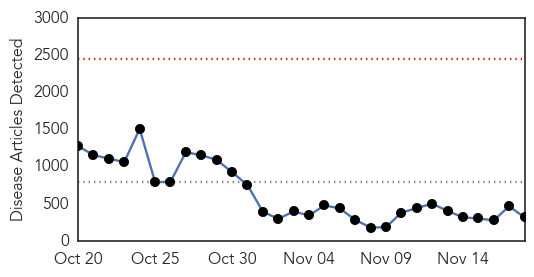
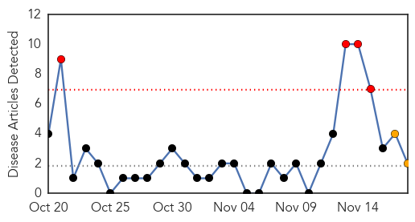
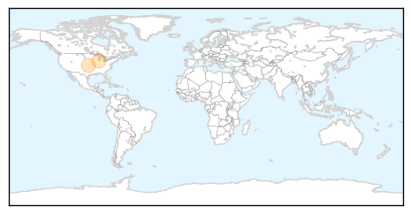

Ebola
30-Day Web Trend
0 alerts, 0 warnings

30-Day Twitter Trend
1 alerts, 0 warnings

Article Locations

Article Confidences

Top Articles:
- 1.000
- Area response prep underway for West African Ebola
- 1.000
- ‘Push Forward’ in Fight Against Ebola
- 1.000
- Ebola Researchers Race to Slow Epidemic
- 1.000
- Fearful Mali places almost 600 under Ebola surveillance
- 1.000
- India quarantines man from Liberia recovering from Ebola
- 1.000
- Ebola in India: Liberia returned Indian tests positive for Ebola in Delhi
- 1.000
- ‘Cured’ in Liberia, quarantined in India
- 1.000
- India quarantines man over Ebola sex risk
- 1.000
- Fearful Mali places at least 600 under Ebola surveillance
- 1.000
- Fearful Mali Places almost 600 under Ebola Surveillance — Naharnet
- 1.000
- Doctor With Ebola Dies at Nebraska Hospital
- 1.000
- Vaccines in Tests, Spike in Mali, Dips in Liberia
- 1.000
- Obama says Ebola still a threat, asks Congress to approve funding
- 1.000
- Fearing surge of Ebola, Mali widens virus watch
- 1.000
- Seventh SL doctor killed by Ebola - Africa
- 1.000
- Hundreds under Ebola surveillance in Mali - Africa
- 1.000
- Fearful Mali places almost 600 under Ebola surveillance
- 1.000
- Fearful Mali places almost 600 under Ebola surveillance
- 1.000
- India quarantines man over Ebola sex risk
- 1.000
- Mali: More than 500 under observation for Ebola
- 1.000
- Garin’s publicity stunt over Ebola draws flak
- 1.000
- Mali Already Has An Ebola Cluster: Can The Virus Be Stopped?
- 1.000
- ‘Cured’ of Ebola disease in Liberia, Indian man isolated in Delhi after a positive test
- 1.000
- Seventh Sierra Leone doctor killed by Ebola - source
- 1.000
- Ebola virus a 'wake-up call' for U.S. hospitals, Johns Hopkins emergency preparedness expert says
- 1.000
- Fearing Ebola surge, Mali widens virus watch
- 1.000
- UPDATE 1-Seventh Sierra Leone doctor killed by Ebola -source
- 0.999
- 7th doctor dies of Ebola in Sierra Leone
- 0.999
- Ebola Tests Can Show False Negatives
- 0.999
- Editorial: Ebola threat persists
- 0.999
- Ebola aid groups say Christie's quarantine rules hampering relief effort
- 0.999
- Ebola Virus Takes Semen Route to Sneak into India
- 0.999
- Hawaii doctor to help fight Ebola in Sierra Leone
- 0.999
- UN's Ebola pointman in Guinea dies
- 0.999
- Questions over Mali's Ebola response
- 0.999
- Réduction des risques de catastrophes
- 0.999
- Why Is Liberia Improving While Sierra Leone Continues To Battle New Cases?
- 0.999
- Man Recovering From Ebola Quarantined in Delhi: 'No Need to Panic', Says Health Minister
- 0.999
- Ebola: The Political Tool of Biological Agents
- 0.999
- Hospital tests patient for ebola
- 0.999
- Ebola reaches Delhi: Indian man who 'recovered' from killer disease enters quarantine after tests find traces of virus
- 0.999
- Efforts by UN health agency under way to step up Ebola response in Mali
- 0.999
- Sierra Leone doctor Martin Salia dies of Ebola in US
- 0.999
- Doctor Dies From Disease in Nebraska Hospital, Infected in Sierra Leone
- 0.999
- Mali Nurse Endures Neighbors’ Stoning to Battle Ebola
- 0.999
- Isle of Man pledges £100k to help Ebola crisis in West Africa
- 0.999
- Sierra Leone doctor dies of Ebola at Nebraska hospital
- 0.999
- Awareness Times News Briefs from Sierra Leone -18th November, 2014: Sierra Leone News
- 0.999
- Doctor's Death Stirs Quest for Faster, Better Ebola Tests
- 0.999
- Efforts by UN health agency under way to step up Ebola response in Mali
Showing top 50 articles...
Top Tweets:
- 0.969
- RT: Follow for the latest updates about the Ebola Virus.
- 0.803
- Stopping the Ebola epidemic in West Africa remains imperative to protecting global public health. http://t.co/yp5T8vl3xK
- 0.793
- RT: Liberia/Sierra Leone: International Football Stars Unite to Fight Ebola: [LINA]The world's top football player... http…
- 0.779
- RT: Stopping the Ebola epidemic in West Africa remains imperative to protecting global public health. http://t.co/yp5T8vl3xK…
- 0.779
- RT: Stopping the Ebola epidemic in West Africa remains imperative to protecting global public health. http://t.co/yp5T8vl3xK…
- 0.586
- RT: Amid signs of new Ebola cases UN health official tells Liberians ‘you must hunt the virus’ http://t.co/f2CWBQZgkI http://t…
- 0.581
- RT: BrandNew: Africa Stop Ebola -Tiken Jah Fakoly Amadou & Mariam Salif Keita Oumou Sangare n many others. https://…
- 0.540
- RT: LISTEN: BandAid30 damages Africa say. @HarvGoldsmith replies all ebola help good africastopebola h…
- 0.540
- Improved Ebola situation in Liberia may complicate vaccine trials http://t.co/0ZNd10xz1E TackleEbola
- 0.525
- RT: Sierra Leone MOH Ebola Update Nov 18: 53 New Conf. Cases & 11 Susp.; 10 new Conf. Deaths http://t.co/e1nKII7YAM
- 0.508
- Food Assistance Outlook Guinea Liberia and Sierra Leone ebola April - September 2015 http://t.co/i4u9grYDo0
Measles
30-Day Web Trend
4 alerts, 2 warnings

30-Day Twitter Trend
0 alerts, 0 warnings

Article Locations
Article Confidences

Top Articles:
Top Tweets:
-
No tweets found for Nov 18, 2014